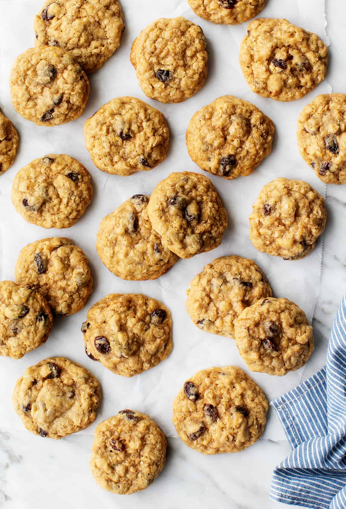

Oatmeal Cookies

These scrumptios oatmeal cookies will kill you!
Original Recipe
Ingredients
- 1 1/2 cups rolled oats
- 2 cups all-purpose flour
- 1 tsp baking soda
- 1/2 tsp salt
- 1 tsp cinnamon
- 1 cup brown sugar
- 1/2 cup butter
- 3 Tbsp maple syrup
- 1 tsp vanilla extract
- 2 Tbsp soy milk or cow milk
- 6 oz chocolate chips or raisins
Instructions
- Preheat oven to 350°
- Add rolled oats, flour, baking soda, salt, and cinnamon to mixing bowl and mix.
- Cream butter and brown sugar together, then add syrup and vanilla.
- Add dry ingredients into the wet and stir until mixture is very crumbly.
- Add the milk and mix in. Amount needed may vary, depending on water content of butter used. Add in the chocolate chips. Check if you can roll some of the batter into a ball - it should be sticky enough to do so. If not, add a little more milk. Roll into balls and place on greased or parchment-lined baking tray.
- Bake for 15 minutes. Edges should be firm and tops lightly browned.